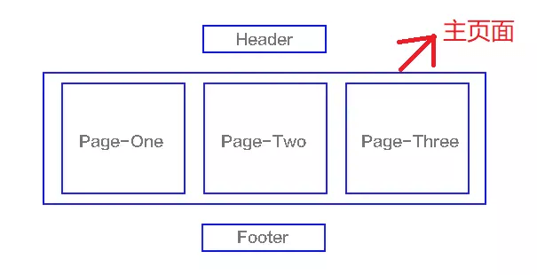
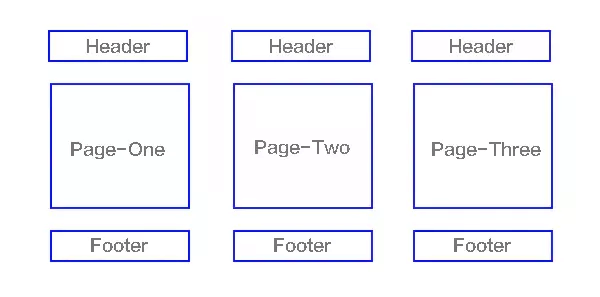
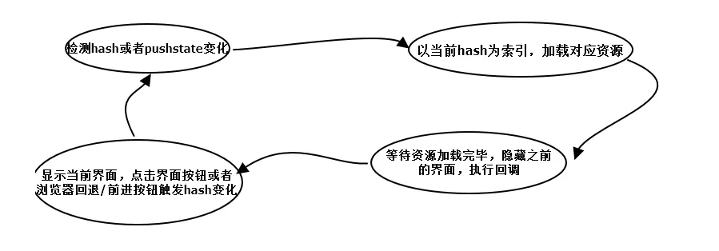
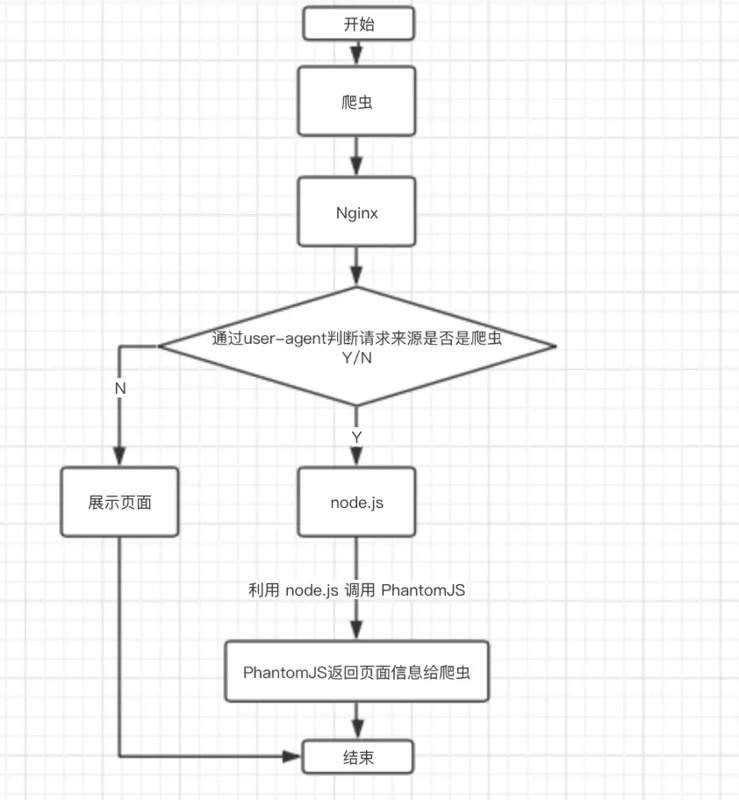

说说你对SPA的理解
参考答案
一、什么是SPA
SPA（single-page application），翻译过来就是单页应用SPA是一种网络应用程序或网站的模型，它通过动态重写当前页面来与用户交互，这种方法避免了页面之间切换打断用户体验在单页应用中，所有必要的代码（HTML、JavaScript和CSS）都通过单个页面的加载而检索，或者根据需要（通常是为响应用户操作）动态装载适当的资源并添加到页面页面在任何时间点都不会重新加载，也不会将控制转移到其他页面举个例子来讲就是一个杯子，早上装的牛奶，中午装的是开水，晚上装的是茶，我们发现，变的始终是杯子里的内容，而杯子始终是那个杯子结构如下图

我们熟知的JS框架如react,vue,angular,ember都属于SPA
二、SPA和MPA的区别
上面大家已经对单页面有所了解了，下面来讲讲多页应用MPA（MultiPage-page application），翻译过来就是多页应用在MPA中，每个页面都是一个主页面，都是独立的当我们在访问另一个页面的时候，都需要重新加载html、css、js文件，公共文件则根据需求按需加载如下图

单页应用与多页应用的区别
| 单页面应用（SPA） | 多页面应用（MPA） | |
|---|---|---|
| :-- | :-- | :-- |
| 组成 | 一个主页面和多个页面片段 | 多个主页面 |
| 刷新方式 | 局部刷新 | 整页刷新 |
| url模式 | 哈希模式 | 历史模式 |
| SEO搜索引擎优化 | 难实现，可使用SSR方式改善 | 容易实现 |
| 数据传递 | 容易 | 通过url、cookie、localStorage等传递 |
| 页面切换 | 速度快，用户体验良好 | 切换加载资源，速度慢，用户体验差 |
| 维护成本 | 相对容易 | 相对复杂 |
单页应用优缺点
优点：
- 具有桌面应用的即时性、网站的可移植性和可访问性
- 用户体验好、快，内容的改变不需要重新加载整个页面
- 良好的前后端分离，分工更明确
缺点：
- 不利于搜索引擎的抓取
- 首次渲染速度相对较慢
三、实现一个SPA
原理
- 监听地址栏中
hash变化驱动界面变化 - 用
pushsate记录浏览器的历史，驱动界面发送变化

实现
hash 模式
核心通过监听url中的hash来进行路由跳转
// 定义 Router
class Router {
constructor () {
this.routes = {}; // 存放路由path及callback
this.currentUrl = '';
// 监听路由change调用相对应的路由回调
window.addEventListener('load', this.refresh, false);
window.addEventListener('hashchange', this.refresh, false);
}
route(path, callback){
this.routes[path] = callback;
}
push(path) {
this.routes[path] && this.routes[path]()
}
}
// 使用 router
window.miniRouter = new Router();
miniRouter.route('/', () => console.log('page1'))
miniRouter.route('/page2', () => console.log('page2'))
miniRouter.push('/') // page1
miniRouter.push('/page2') // page2 history模式
history 模式核心借用 HTML5 history api，api 提供了丰富的 router 相关属性先了解一个几个相关的api
history.pushState浏览器历史纪录添加记录history.replaceState修改浏览器历史纪录中当前纪录history.popState当history发生变化时触发
// 定义 Router
class Router {
constructor () {
this.routes = {};
this.listerPopState()
}
init(path) {
history.replaceState({path: path}, null, path);
this.routes[path] && this.routes[path]();
}
route(path, callback){
this.routes[path] = callback;
}
push(path) {
history.pushState({path: path}, null, path);
this.routes[path] && this.routes[path]();
}
listerPopState () {
window.addEventListener('popstate' , e => {
const path = e.state && e.state.path;
this.routers[path] && this.routers[path]()
})
}
}
// 使用 Router
window.miniRouter = new Router();
miniRouter.route('/', ()=> console.log('page1'))
miniRouter.route('/page2', ()=> console.log('page2'))
// 跳转
miniRouter.push('/page2') // page2 四、题外话：如何给SPA做SEO
下面给出基于Vue的SPA如何实现SEO的三种方式
- SSR服务端渲染
将组件或页面通过服务器生成html，再返回给浏览器，如nuxt.js
- 静态化
目前主流的静态化主要有两种：（1）一种是通过程序将动态页面抓取并保存为静态页面，这样的页面的实际存在于服务器的硬盘中（2）另外一种是通过WEB服务器的 URL Rewrite的方式，它的原理是通过web服务器内部模块按一定规则将外部的URL请求转化为内部的文件地址，一句话来说就是把外部请求的静态地址转化为实际的动态页面地址，而静态页面实际是不存在的。这两种方法都达到了实现URL静态化的效果
- 使用
Phantomjs针对爬虫处理
原理是通过Nginx配置，判断访问来源是否为爬虫，如果是则搜索引擎的爬虫请求会转发到一个node server，再通过PhantomJS来解析完整的HTML，返回给爬虫。下面是大致流程图

SPA是一种现代的网页应用模式，通过动态重写页面的部分内容，避免了页面的整体重新加载。以下是SPA的核心特点：
核心特点
- 单页面加载：整个应用最初只是一个HTML页面，用户的所有操作不会引起页面整体刷新。
- 动态内容更新：通过JavaScript动态与服务器通信，更新页面的某部分内容。
- 用户体验流畅：避免了全页刷新，提供更流畅的用户体验。
- 前端路由：使用前端路由管理不同的视图和状态，不触发页面刷新。
- SEO挑战：可能面临搜索引擎优化的挑战，因为内容是动态加载的。
- 性能优化：需要优化性能，如懒加载和代码分割。
- 构建工具和框架：实现通常依赖现代前端框架和构建工具。
工作流程
- 初始加载：用户访问应用，服务器返回HTML和JavaScript文件。
- 前端路由控制：JavaScript接管URL，根据变化加载组件或视图。
- 异步数据请求：根据用户操作，向服务器请求数据。
- 内容更新：使用JavaScript动态更新DOM。
- 历史状态管理：使用HTML5 History API管理会话历史。
优缺点
优点：
- 提供更流畅的用户体验，交互快速且响应迅速。
- 减轻服务器负担，只需加载必要资源。
- 前后端可以独立开发和部署，提高开发效率。
缺点：
- 面临SEO优化问题，动态内容可能不被搜索引擎正确索引。
- 初次加载可能较长，特别是JavaScript较多时。
- 状态管理和代码组织可能更复杂。
SPA提供了许多优势，但也带来了一些挑战，特别是在SEO和初次加载性能方面。开发者需要根据应用的需求和目标受众来选择是否使用SPA架构。